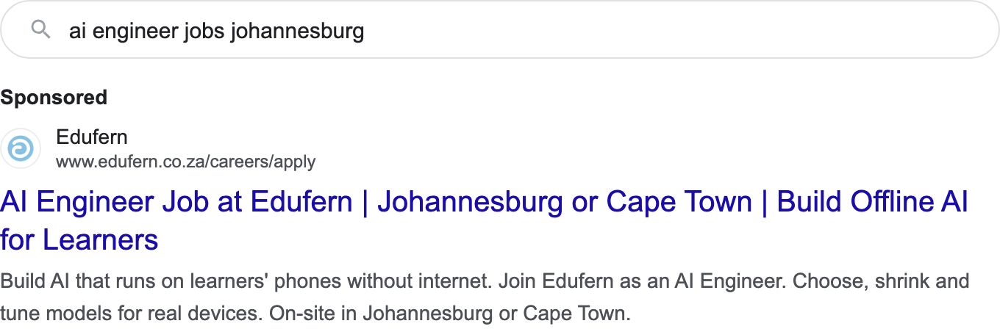
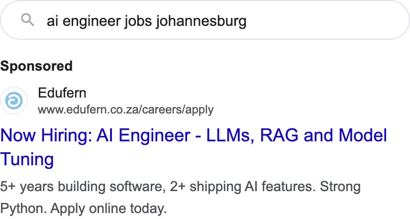
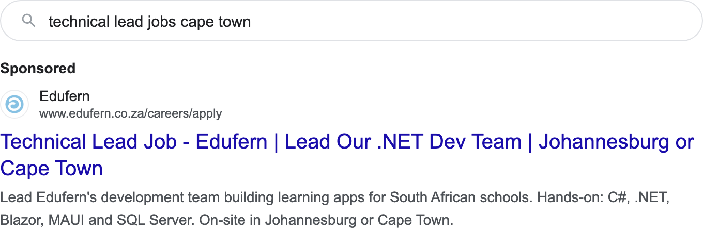
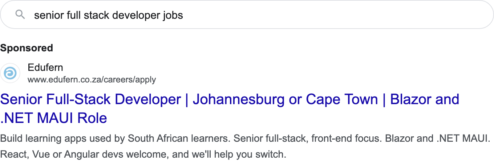
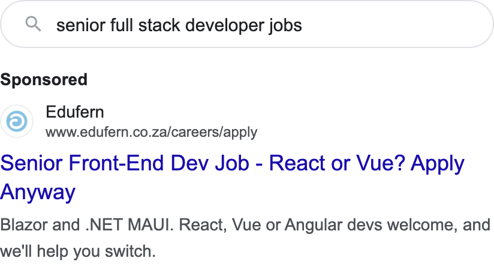
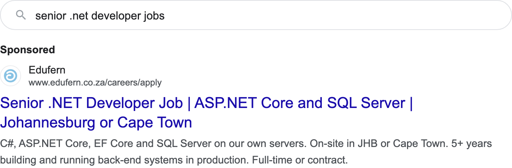
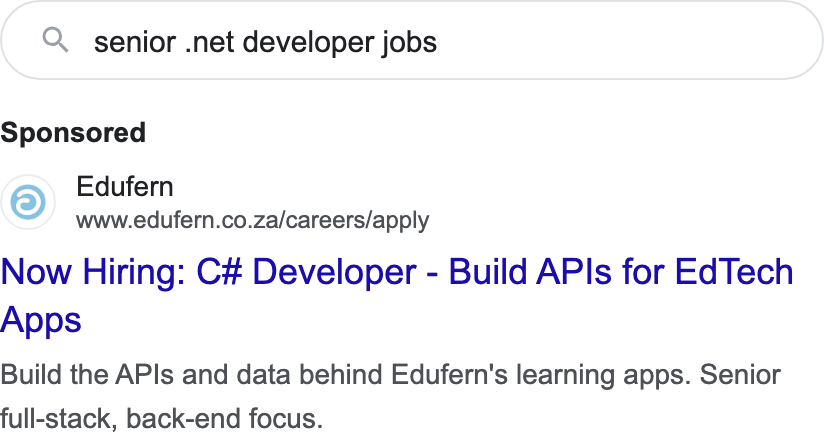

Search ads for Edufern's four senior developer roles. Prepared by Heynow, 24 November 2026.
Each role has one responsive search ad. We give Google 15 headlines and 4 descriptions, and it shows up to 3 headlines and 2 descriptions at a time, in whichever mix gets the most clicks. The screenshots below show two possible mixes per role, one on desktop and one on mobile. Real ads can show other combinations. They only show to people in Gauteng and Cape Town who search for job terms like the keywords listed.


| # | Headline | Chars |
|---|---|---|
| 1 | AI Engineer Job at Edufern | 26/30 |
| 2 | Now Hiring: AI Engineer | 23/30 |
| 3 | On-Device AI Engineer Role | 26/30 |
| 4 | Build Offline AI for Learners | 29/30 |
| 5 | Johannesburg or Cape Town | 25/30 |
| 6 | Senior AI Engineer Vacancy | 26/30 |
| 7 | LLMs, RAG and Model Tuning | 26/30 |
| 8 | Python, ONNX and llama.cpp | 26/30 |
| 9 | EdTech AI Engineer Job | 22/30 |
| 10 | Full-Time AI Engineer Role | 26/30 |
| 11 | Shape AI in SA Education | 24/30 |
| 12 | Apply Online in Minutes | 23/30 |
| 13 | 5+ Years' Experience Needed | 27/30 |
| 14 | We Use Claude Code Daily | 24/30 |
| 15 | Join Edufern's Dev Team | 23/30 |
| # | Description | Chars |
|---|---|---|
| 1 | Build AI that runs on learners' phones without internet. Join Edufern as an AI Engineer. | 88/90 |
| 2 | Choose, shrink and tune models for real devices. On-site in Johannesburg or Cape Town. | 86/90 |
| 3 | 5+ years building software, 2+ shipping AI features. Strong Python. Apply online today. | 87/90 |
| 4 | Help bring offline AI to South African schools. Read the role and apply on our site. | 84/90 |

| # | Headline | Chars |
|---|---|---|
| 1 | Technical Lead Job - Edufern | 28/30 |
| 2 | Now Hiring: Technical Lead | 26/30 |
| 3 | Lead Our .NET Dev Team | 22/30 |
| 4 | C#, .NET MAUI and Blazor | 24/30 |
| 5 | Johannesburg or Cape Town | 25/30 |
| 6 | Senior Tech Lead Vacancy | 24/30 |
| 7 | 7+ Years' Experience Needed | 27/30 |
| 8 | Lead an EdTech Dev Team | 23/30 |
| 9 | Own Our Architecture | 20/30 |
| 10 | Hands-On Technical Lead | 23/30 |
| 11 | Full-Time or Contract Role | 26/30 |
| 12 | Apply Online in Minutes | 23/30 |
| 13 | Mentor Talented Developers | 26/30 |
| 14 | Build Tech for SA Schools | 25/30 |
| 15 | Join Edufern's Dev Team | 23/30 |
| # | Description | Chars |
|---|---|---|
| 1 | Lead Edufern's development team building learning apps for South African schools. | 81/90 |
| 2 | Hands-on: C#, .NET, Blazor, MAUI and SQL Server. On-site in Johannesburg or Cape Town. | 86/90 |
| 3 | 7+ years building production software, including owning architecture. Apply online. | 83/90 |
| 4 | Set technical direction, review code and grow the team. Read the role and apply online. | 87/90 |


| # | Headline | Chars |
|---|---|---|
| 1 | Senior Front-End Dev Job | 24/30 |
| 2 | Senior Full-Stack Developer | 27/30 |
| 3 | Now Hiring: Senior Developer | 28/30 |
| 4 | Blazor and .NET MAUI Role | 25/30 |
| 5 | Johannesburg or Cape Town | 25/30 |
| 6 | React or Vue? Apply Anyway | 26/30 |
| 7 | Build Apps for SA Learners | 26/30 |
| 8 | Senior Full-Stack Vacancy | 25/30 |
| 9 | Front-End Focused Role | 22/30 |
| 10 | We Use Claude Code Daily | 24/30 |
| 11 | Full-Time or Contract Role | 26/30 |
| 12 | Apply Online in Minutes | 23/30 |
| 13 | EdTech Developer Job | 20/30 |
| 14 | Join Edufern's Dev Team | 23/30 |
| 15 | 5+ Years' Experience Needed | 27/30 |
| # | Description | Chars |
|---|---|---|
| 1 | Build learning apps used by South African learners. Senior full-stack, front-end focus. | 87/90 |
| 2 | Blazor and .NET MAUI. React, Vue or Angular devs welcome, and we'll help you switch. | 84/90 |
| 3 | On-site in Johannesburg (Norwood) or Cape Town. Full-time or contract. Apply online. | 84/90 |
| 4 | Senior developers who ship fast with AI coding tools. Read the role and apply on our site. | 90/90 |


| # | Headline | Chars |
|---|---|---|
| 1 | Senior .NET Developer Job | 25/30 |
| 2 | Senior Back-End Developer | 25/30 |
| 3 | Now Hiring: C# Developer | 24/30 |
| 4 | ASP.NET Core and SQL Server | 27/30 |
| 5 | Johannesburg or Cape Town | 25/30 |
| 6 | Senior Full-Stack Vacancy | 25/30 |
| 7 | Back-End Focused Role | 21/30 |
| 8 | Build APIs for EdTech Apps | 26/30 |
| 9 | Full-Time or Contract Role | 26/30 |
| 10 | Apply Online in Minutes | 23/30 |
| 11 | EdTech Developer Job | 20/30 |
| 12 | Join Edufern's Dev Team | 23/30 |
| 13 | We Use Claude Code Daily | 24/30 |
| 14 | C#, .NET and EF Core Role | 25/30 |
| 15 | Build Tech for SA Schools | 25/30 |
| # | Description | Chars |
|---|---|---|
| 1 | Build the APIs and data behind Edufern's learning apps. Senior full-stack, back-end focus. | 90/90 |
| 2 | C#, ASP.NET Core, EF Core and SQL Server on our own servers. On-site in JHB or Cape Town. | 89/90 |
| 3 | 5+ years building and running back-end systems in production. Full-time or contract. | 84/90 |
| 4 | Senior developers who ship fast with AI coding tools. Read the role and apply on our site. | 90/90 |
utm_campaign=recruit_senior_devs_2026, so Google visits show separately in the site's analytics